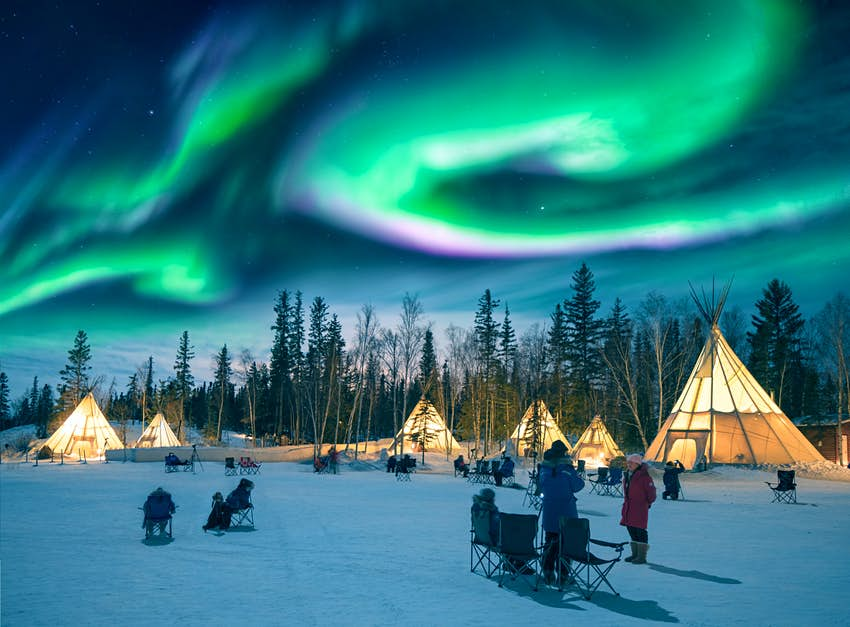
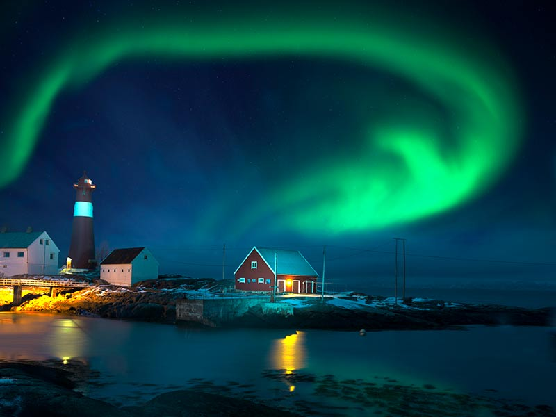

Places to visit in Iceland
"Aurora Borealis"
 
The Northern Lights, also called Aurora Borealis, and Norðurljós in Icelandic, are one of the most spectacular shows on this earth and can frequently be seen in Iceland from September through March on clear and crisp nights. The Northern Lights occur high above the surface of the earth where the atmosphere has become extremely thin, at an altitude of 100-250 km. They are created by electrically charged particles that make the thin air shine, not unlike a fluorescent light. Auroras can be seen in auroral belts that form 20-25 degrees around the geomagnetic poles, both the north and the south. The name Northern Lights was first chronicled in the original Old Norse, as “norðrljós”, in 1230; while the name Aurora Borealis (“Dawn of the North”) is jointly credited to have first been used by Galileo Galilei and Petrus Gassendus in the 17th century. Derived from Aurora, the Roman goddess of Dawn, and Boreas, the Greek god of the North Wind, the name evokes some of the majestic, otherworldly splendour of an auroral display.
"How to see Aurora Borealis"
We can see the northern lights from the capital if they're intense, it's wise to plan at least a short drive away from light pollution to maximize your chances. The beautiful Thingvellir National Park is a popular place to go from Reykjavík, though the wild Reykjanes peninsula surrounding the capital city (including the famous Blue Lagoon) is also a great place to see the northern lights.